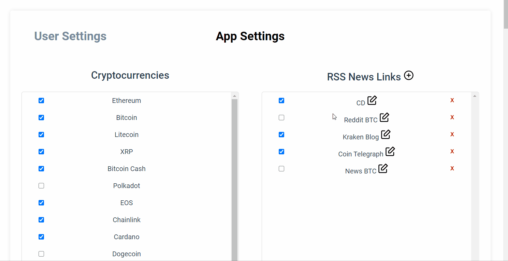
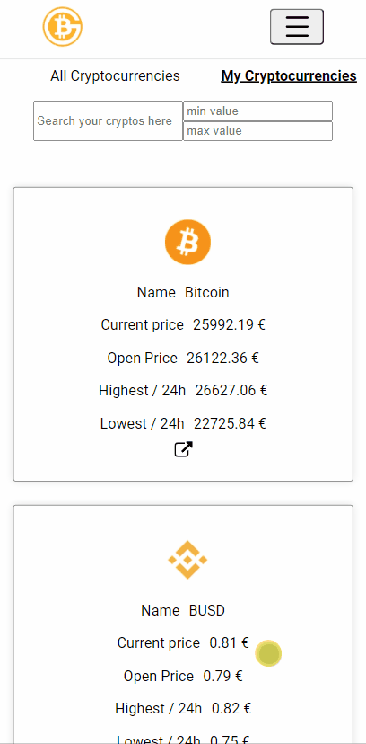

Count of money
I made this project for a web project at school.
I did it in 3 weeks and I did with 3 classmates.
This is a crypto currency stocks application.
In this app, we can lookup for crypto-currencies and see their values in numbers and graphs
We can also read latest articles about crypto currency and subscribe to crypto online newspapers
Count of money
J'ai réalisé ce projet pour un projet web à l'école.
C'était un projet en groupe qui a duré 3 semaines
C'est une application web de stocks de crypto-monnaies.
Dedans, on peut avoir les derniers cours des crypto-monnaies et leurs évolutions
On peut aussi lire les derniers articles des revues en ligne qui parlent de crypto-monnaie et s'y abonner.

A brief presentation of the features I developed
Présentation des fonctionnalités que j'ai développé
Articles
I developed an automated system to fetch articles from crypto-related RSS feeds every 30 minutes. The articles are stored in the database with their metadata, optimizing performance by avoiding repeated requests on each user visit.
J’ai développé un système de récupération automatique d’articles depuis des flux RSS de sites crypto, avec une mise à jour toutes les 30 minutes. Les articles sont stockés en base de données avec leurs métadonnées, ce qui permet d’optimiser les performances en évitant les requêtes répétées à chaque visite utilisateur.
The articles are then scraped from the website and formatted for clear and consistent display.
Les articles sont ensuite scrappés depuis le site et mis en page pour être affichés de manière claire et uniforme.

RSS Mapping tool
Outil de mappage RSS
To do this, admins need to map the RSS feeds they add, since each feed has a different structure. I therefore created a custom tool that makes the mapping process very easy and intuitive.
Pour faire cela, les admins doivent faire le mappage des flux RSS qu'ils ajoutent, parce que tous les flux RSS sont différents, j'ai donc créé un outil spécial qui rend le mapping très facile et intuitif.
Articles are then accessible in this page :
- Latest : Shows latest articles with a "see more" button in the bottom of the page.
- Keywords : Shows articles with user's saved keywords.
- Search : Searches for all articles that contain the keywords written by the user.
The user can click on an article to open it.
Les articles sont ensuite disponibles sur cette page :
- Latest : Liste les derniers articles avec un bouton "voir plus" en bas de page pour afficher la suite.
- Keywords : Montre tous les articles contenant les mots clé enregistrés par l'utilisateur.
- Search : Cherche dans les articles.
L'utilisateur peut cliquer sur un article pour l'afficher.

This opens it in a page like this :
Cela l'ouvre dans une page comme celle-ci
Currencies
Crypto-monnaies
Here's the crypto-currencies page. It lists all active (selected by the admin) currencies In the "my currencies" onglet the user can access his favorite currencies. It also has a search bar. The user can also access a currency's details by clicking it.
Voici la page des crypto-monnaies. Elle liste toutes les crypto-monnaies actives (par l'admin) Dans l'onglet "my currencies" l'utilisateur peut accéder à ses crypto-monnaies favorites Il y a aussi un outil recherche. L'utilisateur peut aussi accéder aux détails d'une crypto-monnaie en appuyant dessus.

Details :
Details :

Mobile
The application is fully responsive and adapts to device's screen.
L'application est responsive et s'adapte à l'écran de l'utilisateur.
